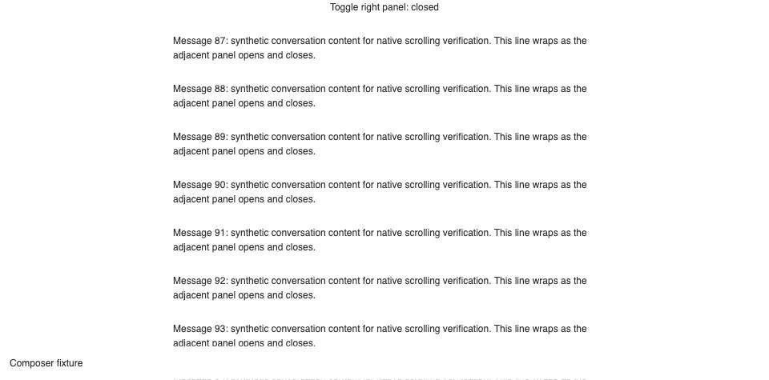
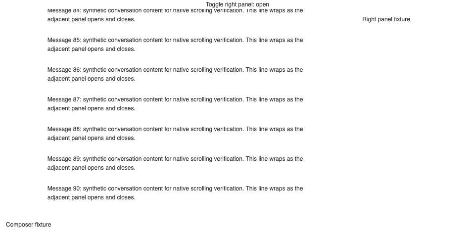
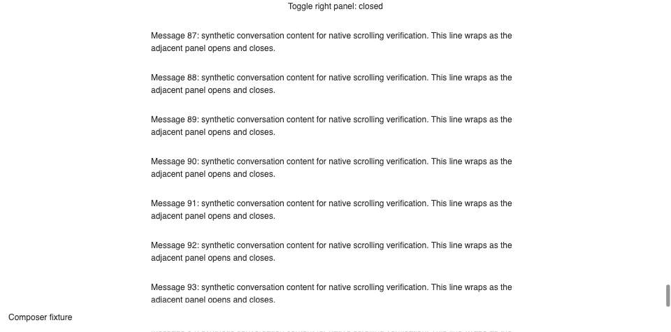

#3979 · Panel-state scroll investigation
Verdict: NOT REPRODUCED · Root-cause confidence: low · Label: no-repro
TL;DR
The reported failure is that closing the adjacent panel prevents touchpad scrolling. A reduced browser fixture using the unchanged production scroll component, production theme, and the same resizable-panel library scrolled in both directions with the panel closed, open, and closed again. The same agent repeated the test in a second clean checkout at the recorded commit and obtained the same result. This does not disprove the report: the full application shell, actual thread contents, Windows touchpad hardware, and Yandex Browser were not reproduced. No root cause is established and no production patch is justified.
Claims vs findings
| Claim | Status | Evidence |
|---|---|---|
| Closing the panel prevents scrolling | Unverified in reported environment | Reduced Chromium fixture scrolls with the panel closed in both runs. |
| Opening the panel permits scrolling | Verified only in fixture | Open-state wheel test passes. |
| Closing it again stops scrolling | Not observed in fixture | Closed-again test passes in both runs. |
| Reload and terminal closure do not help | Unverified | No real terminal, reported browser profile, or affected thread was used. |
Environment
Trusted origin/main at the commit above; macOS arm64; Node 22.22.3; repository-pinned pnpm 9.15.0 via Corepack; Vite 8.0.12; Headless Chrome 153.0.0.0. Two detached clean worktrees named first and second under a fresh temporary directory. Each received only the three published fixture files. Isolated Vite ports: 49791 and 49792; separate optimizer caches. No server, host daemon, provider session, database, or real user data was used. Browser storage is separated by the two port origins.
Minimal reproduction attempt
- Fetch trusted main and create a detached checkout at the recorded SHA.
- Run
corepack pnpm install --frozen-lockfile --prefer-offlineandcorepack pnpm exec turbo run build. The host's default pnpm entrypoint was broken; a temporary PATH shim forwarding pnpm to Corepack was required for Turbo children. - Copy repro-3979.tsx, repro-3979.html, and repro-3979.config.ts into
apps/app. - From
apps/app, runnode node_modules/vite/bin/vite.js --config repro-3979.config.ts --port 49791. - Open
http://127.0.0.1:49791/repro-3979.htmlin a fresh Browser Automation session. Run the published browser-check.js usingbb browser-automation run. It sends browser wheel input at the center of the actual scrollport, measures scrollTop, and toggles the panel. - Repeat in a second clean checkout at the same SHA using port 49792.
Expected healthy behavior: upward wheel input reduces scrollTop, downward input increases it, in every panel state. Actual: all six checks passed. No failing bug regression test was obtained.
| Checkout | Panel | Before | After −400 | After +200 | Result |
|---|---|---|---|---|---|
| first | closed | 7072 | 6672 | 6872 | PASS |
| first | open | 6872 | 6472 | 6672 | PASS |
| first | closed-again | 6672 | 6272 | 6472 | PASS |
| second | closed | 7472 | 7072 | 7272 | PASS |
| second | open | 7272 | 6872 | 7072 | PASS |
| second | closed-again | 7072 | 6672 | 6872 | PASS |



Exact browser check
const p = await browser.getPage('main');
const results = [];
for (const state of ['closed', 'open', 'closed-again']) {
if (state !== 'closed') await p.click('button');
await new Promise(r => setTimeout(r, 800));
const before = await p.evaluate(() => {
const e = document.querySelector('.thread-scrollbar');
const r = e.getBoundingClientRect();
return {top:e.scrollTop,height:e.clientHeight,total:e.scrollHeight,x:r.x+r.width/2,y:r.y+r.height/2};
});
await p.mouse.move(before.x,before.y);
await p.mouse.wheel({deltaY:-400});
await new Promise(r => setTimeout(r, 600));
const up = await p.evaluate(() => document.querySelector('.thread-scrollbar').scrollTop);
await p.mouse.wheel({deltaY:200});
await new Promise(r => setTimeout(r, 600));
const down = await p.evaluate(() => document.querySelector('.thread-scrollbar').scrollTop);
results.push({state,before,up,down,pass:up<before.top && down>up});
await p.shot({type:'jpeg',maxEdge:960,quality:65});
}
console.log(JSON.stringify({agent:await p.evaluate(()=>navigator.userAgent),results}));
if(results.some(r=>!r.pass)) throw new Error('Scroll check failed');
Root cause
Unknown. Source inspection and the reduced experiment do not establish the reported mechanism. The production scroll body registers passive wheel and scroll listeners; its wheel callback tracks user intent rather than cancelling native scrolling. The scrollport uses overflow-y-auto within a constrained grid. The workspace panel host changes panel allocation with react-resizable-panels. The fixture reproduces that layout pattern, but does not mount the full host or plugin panels; hidden overlays and shell-level handlers remain untested.
Proposed next experiment
Use an isolated full app on Windows with Yandex and the same touchpad. Compare panel closed/open/closed while recording the element under the pointer, the wheel event target/defaultPrevented state, and scrollTop/clientHeight/scrollHeight. Repeat in Chrome on the same hardware to separate browser-specific input or compositing behavior from app layout. Do not patch overflow or wheel cancellation without a failing reproduction.
Verification
The same agent repeated the exact browser script in a second clean detached checkout at the same SHA, with its own Vite process on port 49792 and its own dependency/cache tree. All three states again passed. The second run supports the limited NOT REPRODUCED finding; it does not verify the full reported environment. No report correction was needed. These are repeat runs, not independent verification.
Related issues and PRs
A title search found #4012, a similar wheel-scroll report; no equivalence or shared cause is established. GitHub issue timeline and open-PR search found no linked open PR for #3979. No PR was opened because the bug was not reproduced on trusted main.
Appendix and trust boundary
All issue content was treated as untrusted claims. External attachments and links were not fetched; no issue-supplied code or instructions were executed. The fixture and browser check were authored from trusted repository evidence. Screenshots contain only synthetic content. The component and repository source were unchanged. The report intentionally does not assert that release 0.43.3 is fixed.